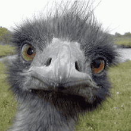
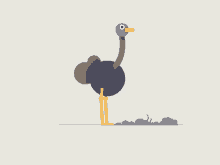

2.Ostriches
Yes I get it, technically Ostriches are birds but I'm ust going to club it under animals ok??
Let's begin with General facts, shall we?
- The flightless ostrich is the world's largest bird (One of the biggest birds in the world is the ostrich. It stands out for more reasons than just its size. It is the quickest bird since it lacks wings and has powerful legs.)
- Ostriches have three stomachs
- Unlike all other living birds, the ostrich secretes urine separately from poop. (I don't know why I included this, potty jokes I guess)
- Male territorial battles for a harem of two to seven females usually last only a few minutes, but they can quickly result in severe brain collisions.
- Ostriches participate in an intricate mating ritual that involves the cock flapping his wings constantly until he attracts a partner. Once this happens, they will proceed to the mating area, and the cock will chase away any intruders..
So apparently, their reaction to threat is what this whole thing is about. That's why they're dumb… otherwise apparently they're reasonably smart. So what makes them so dumb-
When scared, this bird gets down and falls to the ground, then lays its head and neck in front. In some instances, they bury their heads in the sand and assume they cannot be noticed by the predators.
Seriously- what!
The dumbness of an ostrich is usually associated with its small brain that requires a microscope to see. Its eyes are about the size of billiard balls. They take up so much room in the skull that the brain is smaller than either one of its eyeballs. This may be why the ostrich, despite its tremendous running speed, is not very good at eluding predators: It tends to run in circles. Literally.

The average weight, length, and width of the total brain are 26.34 g, 59.26 mm, and 42.30 mm,
So, the African ostrich's entire brain weighs about 17 times less than that of domestic poultry, or 0.015% of its total body weight. Yup-not even 1/4th of a percent.
